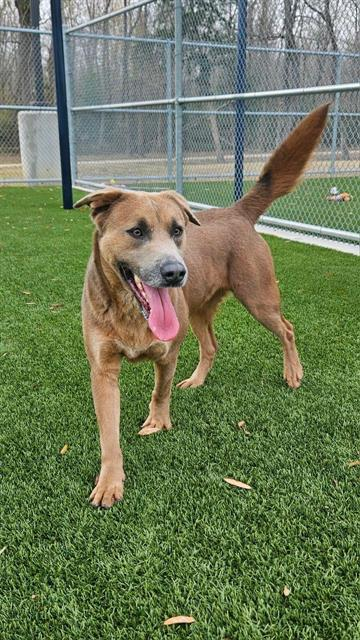
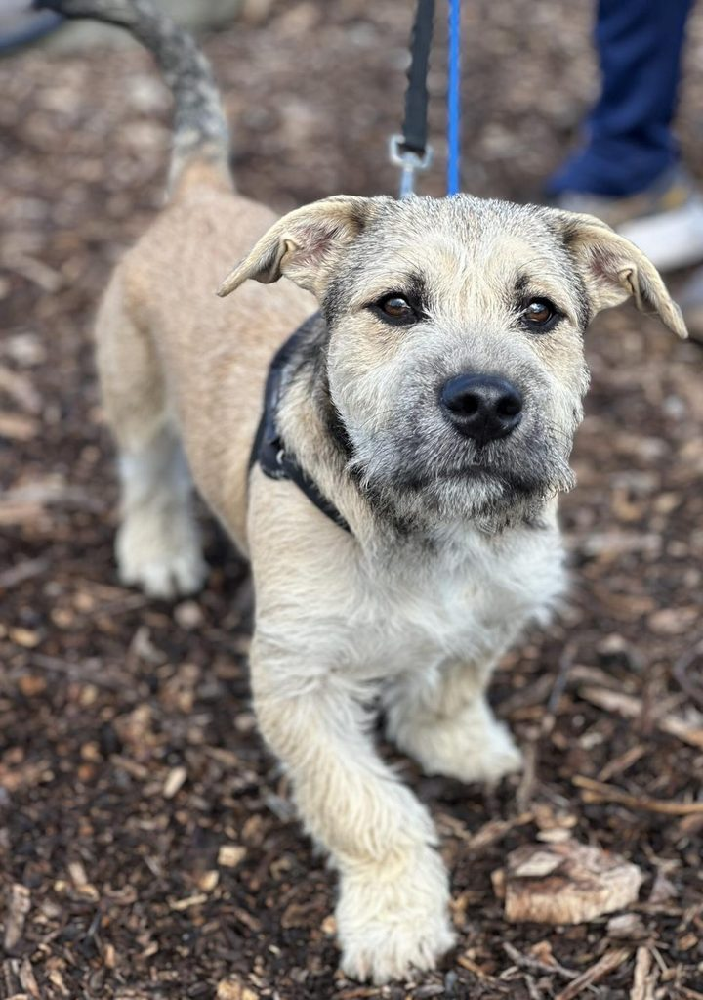
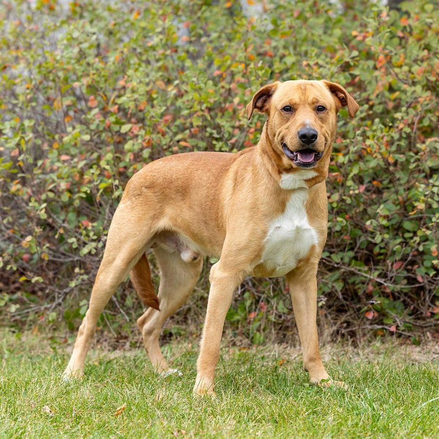

Buddy
Age: 2 years | Breed: Mixed | Friendly, energetic, great with kids.
Giving rescued dogs a second chance at life
Every dog at Paws Haven has been rescued, medically treated, and assessed for temperament before being made available for adoption. Below are just a few of the dogs currently looking for their forever home.

Age: 2 years | Breed: Mixed | Friendly, energetic, great with kids.

Age: 4 years | Breed: Terrier mix | Calm, affectionate, loves cuddles.

Age: 1 year | Breed: Labrador mix | Playful, needs an active home.
The adoption fee is R1,200. This covers sterilisation, vaccinations, deworming, and a microchip, so your new companion goes home fully protected.
Most adoptions take between three and seven days, depending on how quickly we can complete the meet-and-greet and the home suitability check.
Yes. We arrange a supervised meet-and-greet between your current pets and the dog you are interested in to make sure they get along before the adoption is finalised.
We offer a 14-day settling-in period. If things aren't working, you can return the dog to us and we will help find a better match.